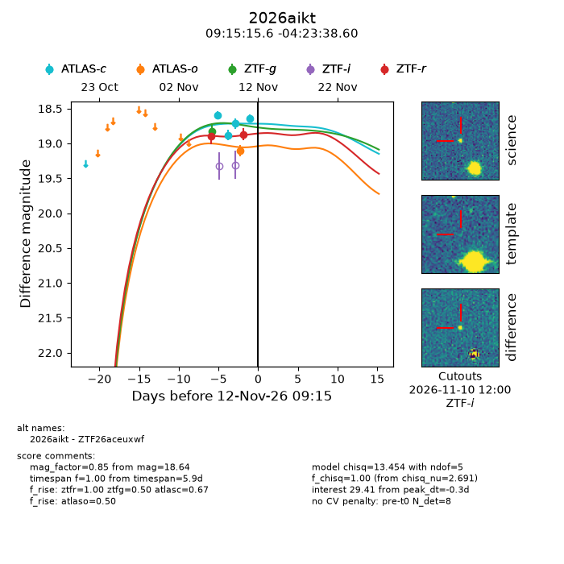
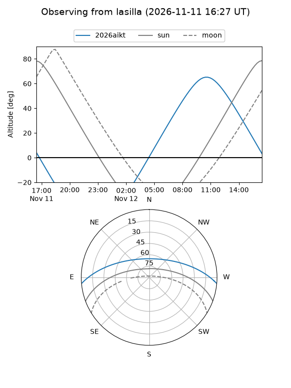
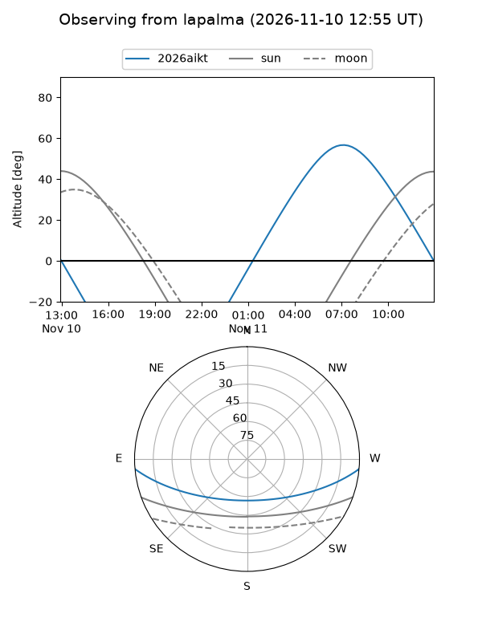
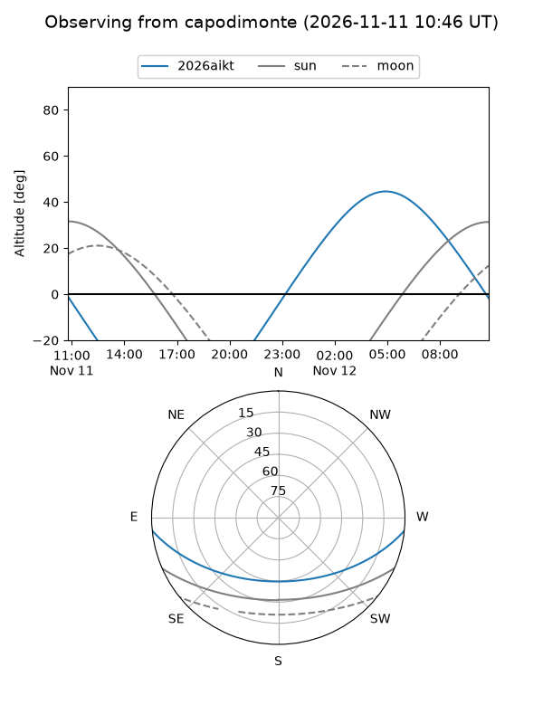
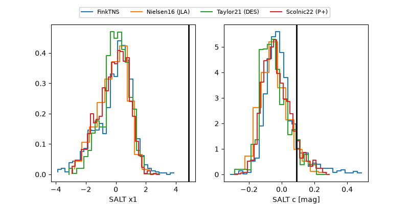

2026aikt
Target 2026aikt at 2026-11-12 09:20
Aliases and brokers:
FINK-ZTF: ztf.fink-portal.org/ZTF26aceuxwf
Lasair-ZTF: lasair-ztf.lsst.ac.uk/objects/ZTF26aceuxwf
ALeRCE-ZTF: alerce.online/object/ZTF26aceuxwf
YSE-PZ: ziggy.ucolick.org/yse/transient_detail/2026aikt
TNS name: wis-tns.org/object/2026aikt
Direct TNS query: direct search
alt names
ZTF26aceuxwf (ztf,fink_ztf)
2026aikt (tns,yse)
Coordinates:
equatorial (ra, dec) = 138.8150,-4.39406
equatorial (HMS+DMS) = 09:15:15.59,-04:23:38.60
galactic (l, b) = (235.4819,+29.08397)
Flags:
peak dt: -0.3
Photometry:
last atlasc=18.64, atlaso=19.10, ztfg=18.82, ztfr=18.87
4 atlasc, 1 atlaso, 1 ztfg, 2 ztfr detections
Lightcurve

Visibility



Additional plots
